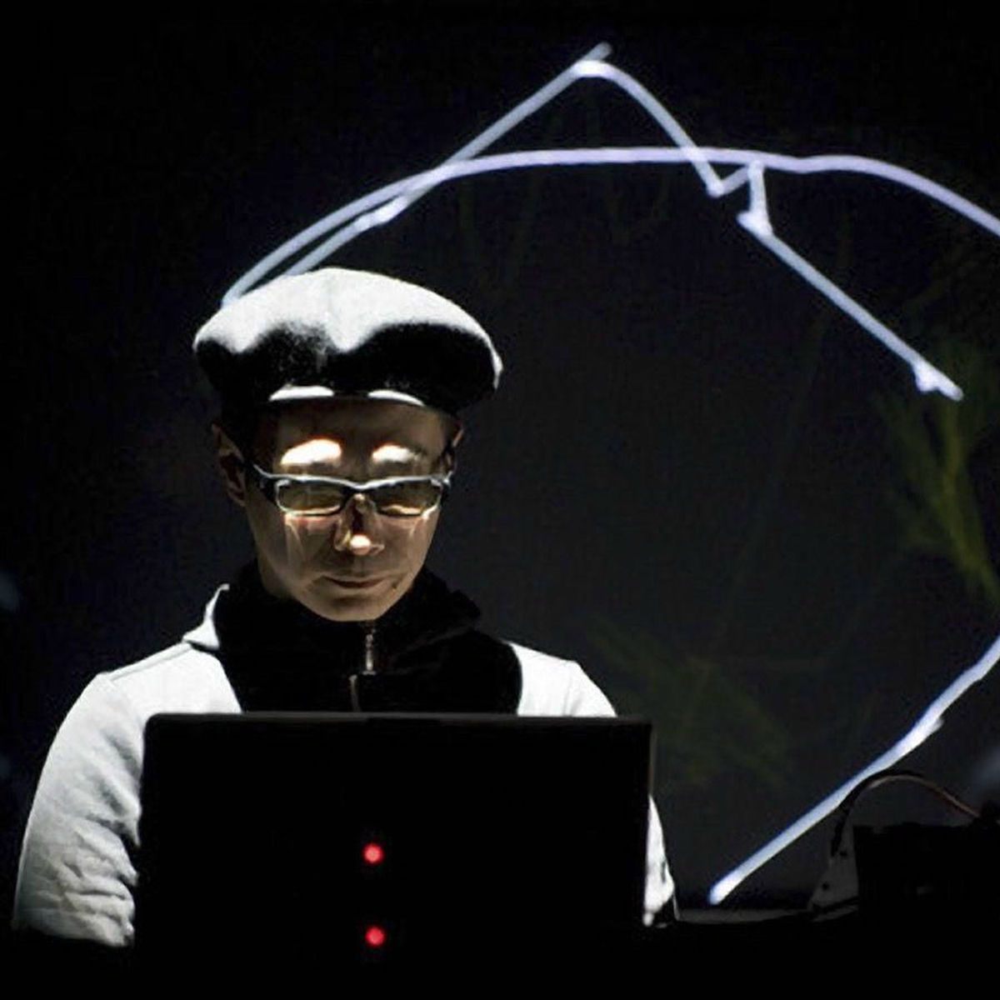
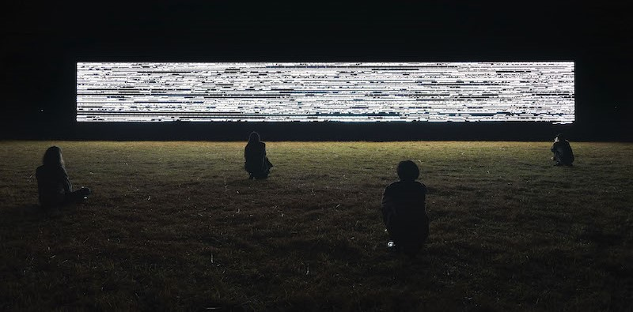

DATA ART: RYOJI IKEDA
El desarrollo de la computación ha revolucionado la música, no solo en cómo se compone y produce, sino también en cómo se experimenta. Hoy en día, los compositores no dependen únicamente de instrumentos tradicionales; pueden transformar datos, imágenes e incluso fenómenos físicos en sonido. El Data art es una práctica donde se utilizan sistemas computacionales como algoritmos, programas o procesos para producir obras visuales o sonoras.

Uno de los artistas más influyentes en esta línea es el japonés Ryoji Ikeda.
Nacido en 1966 en Japón, es un compositor electrónico y artista visual que se centra en explorar el sonido y la luz con una precisión matemática, creando experiencias inmersivas donde combina música, visuales y ciencia.
Es reconocido mundialmente por sus instalaciones y conciertos con proyectos como Datamatics, test pattern, spectra, superposition y micro | macro.
Ha presentado su obra en importantes museos y festivales de todo el mundo, incluyendo el Centro Pompidou, el Barbican Centre, el Museo de Arte Contemporáneo de Tokio y la Fundación Telefónica de Madrid, entre muchos otros.
Entre sus discos más influyentes están +/-, 0°C, dataplex, test pattern y supercodex, que marcaron un nuevo estilo en la música electrónica minimalista.
DATAMATICS
Es una serie de conciertos audiovisuales donde Ikeda convierte conjuntos masivos de datos en patrones visuales y sonoros. La obra se presenta como un espectáculo multimedia en el que pantallas gigantes proyectan gráficos abstractos -líneas, puntos, códigos binarios- al ritmo de sonidos electrónicos, pulsos y frecuencias extremas.
La obra “datamatics” ejemplifica varios de los principios descritos por Lev Manovich, teórico de los nuevos medios digitales:
Numerical Representation: Todo parte de datos digitales y numéricos
Automation: El sonido e imagen se generan automáticamente por algoritmos sin intervención manual constante.
Variability: Cada interpretación o dataset puede generar una nueva versión de la obra.
Transcodificación: Traduce datos (información científica o numérica) a sonido y visuales.
Modularidad: La obra está construida a partir de módulos de datos y procesos independientes, combinables
FUNCIONAMIENTO DE LA OBRA

inicia con la exploración de la materialidad del dato, una fase en la que selecciona rigurosamente las materias primas para su universo sonoro y visual: bases de datos científicas, secuencias numéricas o coordenadas que, posteriormente, se procesan bajo el prisma de la influencia estética de las matemáticas y los principios minimalistas de la música concreta digital.
A continuación, utilizando su dominio de la programación en tiempo real y el hardware de alta resolución, ocurre la traducción algorítmica esencial, que convierte estos datos abstractos en valores numéricos funcionales. Estos valores se transforman de inmediato en intensos estímulos visuales (determinando posición y escala en proyecciones) y estímulos sonoros (definiendo frecuencia y volumen de tonos puros) que se sincronizan de manera obsesiva para forjar una experiencia sensorial total.
La forma final de su obra, determinada por la presentación de estructuras que oscilan desde el píxel singular hasta las vastas redes de datos, es presentada en un montaje audiovisual que utiliza pantallas múltiples, sonido envolvente y una oscuridad total, culminando en una experiencia inmersiva diseñada para conectar al espectador con la esencia numérica del mundo.
Conclusiones
La exploración sensorial que propone, permite dejar de asociar los datos sólo con representaciones racionales o más reflexivas y nos permite vivirlos como una experiencia plenamente corporal. Lo que nos inspira a experimentar nuevas formas de comunicarnos desde el diseño y la tecnología. Al plantear un proyecto que cuestiona y le da una nueva identidad conceptual a algo (como lo son los datos en este caso) ya no debe ser solo reflexiva o expositiva, Ikeda nos muestra lo mucho que ganamos al volverla inmersiva y aprovechar las otras sensibilidades del cuerpo.
Laura Aylwin - Maura Epuñan - Florencia García - Trinidad Otaegui - Mei Sandoval - Tamara Urrea